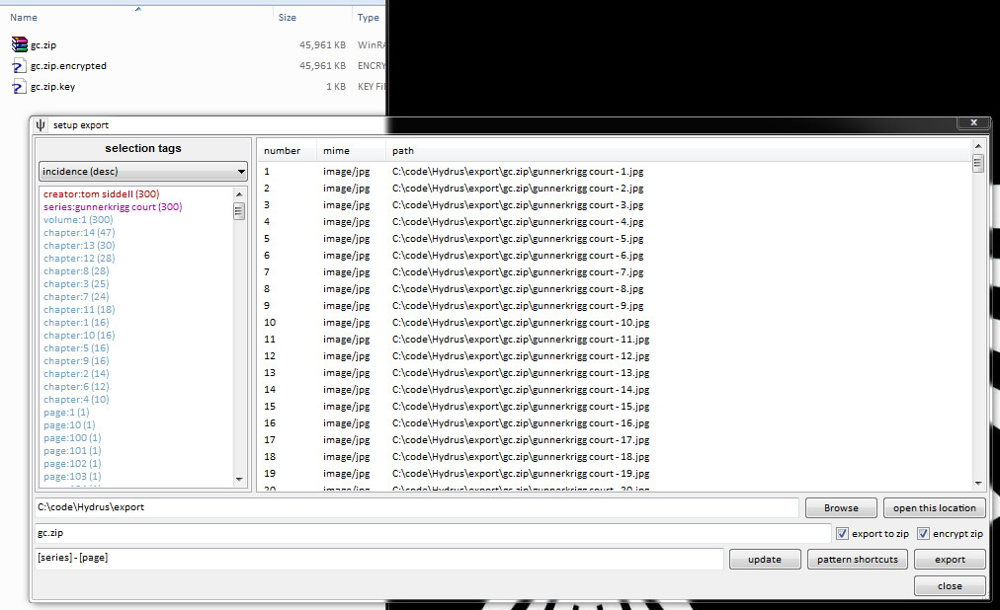
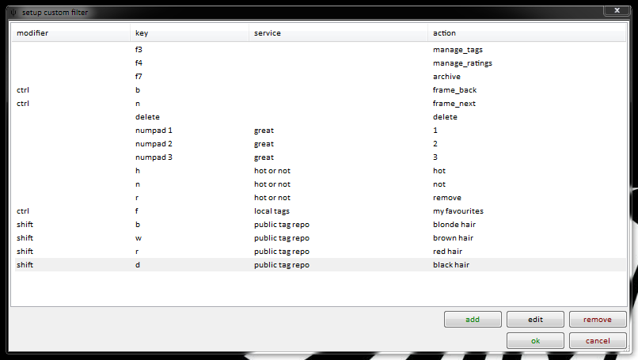
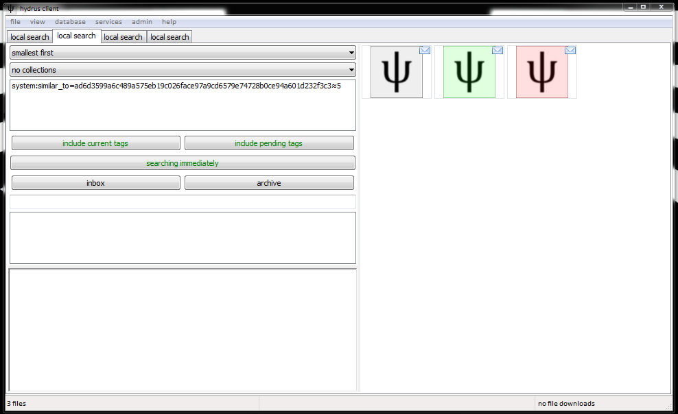
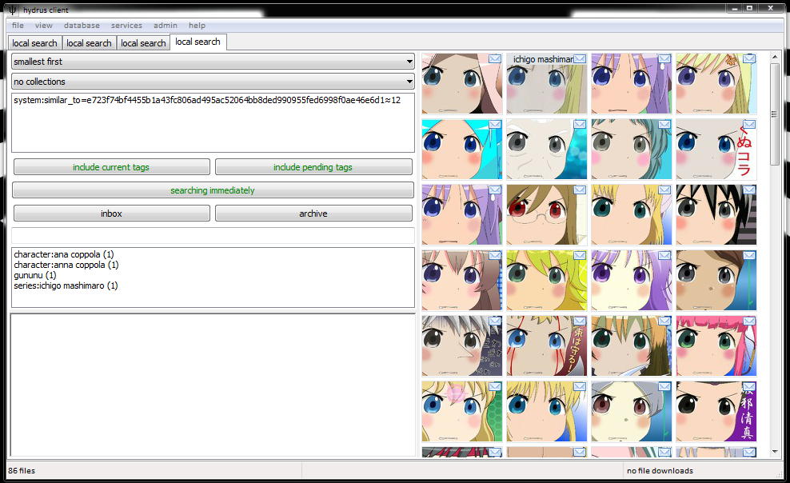

searching with wildcards
The autocomplete tag dropdown supports wildcard searching with '*'.

The '*' will match any number of characters. Every normal search has a secret '*' on the end that you don't see, which is how full words get matched from you only typing in a few letters.
This is useful when you can only remember part of a word, or can't spell its first half. You can put the '*' anywhere, but you may want to experiment to get used to the exact way these searches work. Some results can be surprising!

You can select the special predicate inserted at the top of your autocomplete results (the highlighted '*vagelion' and '*va*ge*' above), and it will work like any other predicate. It will return all files that match that wildcard, i.e. every file for every other tag in the current dropdown list.
This is particularly useful if you have a number of files with commonly structured over-informationed tags, like this:

In this case, selecting the 'title:cool pic*' predicate will return all three images in the same search, where you can conveniently give them some more-easily searched tags like 'series:cool pic' and 'page:1', 'page:2', 'page:3'.
using flash in fullscreen view
Flash files are sometimes interested in inputs (like spacebar or mouse-scrollwheel) that mean something to hydrus's fullscreen view, and the libraries I have to use to show flash don't handle these events like normal windows. I now have it set so if your mouse is inside the flash window, the input will go to the flash, and if it is outside, it goes to the fullscreen window.
So, if you want to play a flash game in fullscreen, keep your mouse inside the window.
exclude deleted files
In the client's options is a checkbox to exclude deleted files. It recurs pretty much anywhere you can import, under 'advanced import options'. If you select this, any file you ever deleted will be excluded from all future remote searches and import operations. This can stop you from importing/downloading and filtering out the same bad files several times over. The default is off. You may wish to have it set one way most of the time, but switch it the other just for one specific import or search.
tag censorship
If you do not like a particular tag or namespace, you can easily hide it with services->manage tag censorship:

You can exclude single tags, like as shown above, or entire namespaces (enter the colon, like 'species:'), or all namespaced tags (use ':'), or all unnamespaced tags (''). 'all known tags' will be applied to everything, as well as any repository-specific rules you set.
A blacklist excludes whatever is listed; a whitelist excludes whatever is not listed.
This censorship is local to your client. No one else will experience your changes or know what you have censored.
importing and adding tags at the same time
Add tags before importing on file->import files lets you give tags to the files you import en masse, and intelligently, using regexes that parse filename:

This should be somewhat self-explanatory to anyone familiar with regexes. I hate them, personally, but I recognise they are powerful and exactly the right tool to use in this case. This is a good introduction.
Once you are done, you'll get something neat like this:

Which you can more easily manage by collecting:

Collections have a small icon in the bottom left corner. Selecting them actually selects many files (see the status bar), and performing an action on them (like archiving, uploading) will do so to every file in the collection. Viewing collections fullscreen pages through their contents just like an uncollected search.
Here is a particularly zoomed out view, after importing volume 2:

Importing with tags is great for long-running series with well-formatted filenames, and will save you literally hours' finicky tagging.
tag archives
A user told me he had scraped all of danbooru's tags, and we got to discussing if his data could be integrated with hydrus.
There are some technical limitations that prohibit rawly importing that data into a hydrus tag repository (our different systems use different file hash standards), but I figured it would be possible to import his data into a hydrus client, at least for any locally stored files.
After a bit of planning, I developed the concept of a tag archive, which is just a big and efficiently indexed database of hashes and tags that you can share very easily. Storing a tag archive in the right directory in your client's database allows you to synchronise with that archive, importing whatever tags it thinks your files should have to whatever tag service you wish.
The folder to place archives is install_dir/db/client_archives. You can get some archives that I have prepared here.
Once you have put something in your archive folder, start the client, and then go services->manage services and browse to your local tag service or a remote tag repository. You should see a box for managing tag archives.

Tag archive sync works a bit like the advanced tag options when you download from a booru or other gallery service; you select the namespaces the archive offers that you are interested in, and then, when you click OK, the client will search the archive for your local files. It will fetch the archive's tags for those files, filter according to your namespace selection, and then add or pend the tags as appropriate, just as if you had entered them in the manage tags dialog.
New files that you import will also be checked against your archive syncs, keeping you up to date.
Be careful with this tool! If you have tens of thousands of files and sync with an archive that has tens of millions of mappings, you may end up adding or pending tens of thousands of tags. It may take several minutes to initialise the sync, as well. Make sure you get your namespaces set exactly how you want before you click OK on the dialog.
export to zip and encrypted
The export dialog now supports exporting to zip, and, further, encrypting it:

The zip will work as normal. The .encrypted file is essentially a byte-for-byte AES-256 encryption of the zip. It is a hydrus-specific filetype, so is only useful for importing to other hydrus clients. I added it in the case you wish to send files from one place to another, or host them publicly, completely secretly. I would have just used passworded zip files, but my library zipfile doesn't support it!
To move the encrypted file securely, just send it as you would any other way: ftp it, put it on a file hosting service, whatever you like. You don't have to worry about anyone seeing the .encrypted file alone. The important thing is to send the .key file in a private way, either over a known encrypted channel or by passing it using a usb stick or similar.
To import the .encrypted file, just drag it on the client like any other. If the .key file is in the same folder, the client automatically decrypt the .encrytped back to a zip and try importing that. If not, it'll show a dialog where you can manually paste the raw key - which is just 96 characters of hex.
Although I can't guarantee my cyptography is absolutely perfect, I feel fairly confident saying that it will be extremely difficult for someone to see the zip without the associated key.
custom filter
Once you are comfortable with the client's tagging and rating, you may be interested in performing a custom filter, which is essentially the fullscreen browser with custom shortcuts. You select it from the regular thumbnail right-click menu. First, it will show you a dialog:

Which has a sub-dialog to add and edit actions:

You can reassign the default shortcuts for regular things, like archive/delete and opening tag/ratings dialogs, and also add shortcuts for adding/removing a tag or setting/unsetting a rating. Shortcuts do not yet combine; they overwrite.
On the left of the parent dialog, you can save and load favourite patterns of shortcuts.
Once you hit ok on the parent dialog, the fullscreen browser will launch. Navigation and zooming happens as normal with the mouse and keyboard, unless you have overwritten a shortcut! Hitting any of the shortcuts you declared should carry out the action. Tags will pend/rescind pend or petition/rescind petition or add/delete as appropriate to the type of tag service and the tag's status for the particular file.
finding duplicates
system:similar_to takes two arguments: a hash and an integer representing max hamming distance (0 means exactly the same, 64 means everything. 5 is good for finding dupes). You can quick-select it from a file's right-click menu. It returns all images that are very similar to the hash. For example:
Here are a couple of duplicates, found despite their different resolution.

And some images of similar shape but not colour.

If you are careful, you can find images that look only somewhat like your hash. You get a lot of false positives with hamming distance of much more than 12, though.

I will, sometime, write an algorithm that says 'show me all the dupes currently in the database'.
PIL errors
At some point, you will probably encounter a PIL error when importing a file. PIL is the Python Image Library, the code I use to manipulate image files. Some files are kooky, and just won't load with it. I can't fix these errors, since PIL is not mine. Just gotta deal with it.
If the PIL error'ing file is one you particularly care about, I suggest you import it into photoshop or similar and save it again. Photoshop should be clever enough to parse the file's weirdness, and then it'll hopefully save again to a simpler format that PIL, and hence the client, will be able to understand.
busted up gifs
Animated gifs are a real pain in the neck. There are several loopholes in the standard that permit odd palettes and colourspaces, and PIL has a hard time parsing it all. I try my best to compensate, but some still break for reasons I can't fathom.
So, some gifs will have a coloured first frame but grey frames thereafter; or they will have odd washy noise all over; or they will just be black. The file isn't broken, the client is just looking at it wrong.
setting a password
the client offers a very simple password system, enough to keep out noobs. You can set it at database->set a password. It will thereafter ask for the password every time you start the program, and will not open without it. However none of the database is encrypted, and someone with enough enthusiasm or a tool and access to your computer can still very easily see what files you have. The password is mainly to stop idle snoops checking your images if you are away from your machine.
the client's server
The client runs a very simple http server. I want to do much more with it in future.
When you boot the client, it will try to host a service on port 45865, which will respond to /file and /thumbnail requests just like a file repository, but without needing an access key, and only to localhost (127.0.0.1).
For instance, the following image (6c0ae65894c7a5ffd686f54cc052326b8ea188a691a1895b2f88b7c60a07f13f.jpg, in the help dir) is served here from disk:
And here it will attempt to load from the client:
For more information, check the image's two urls. It will of course only display in the second case if you import it to the client and have it running when you load this page. You can copy the second image's url and replace the hash with that of any other file in your collection and it should work.
If you run multiple copies of the client, you can change the port number in options.
a note concerning memory usage
the client does a lot of caching. It eats plenty of memory, and if you go crazy you can crash the program. A default-sized 4000-strong thumbnail pane is really just a 250MB-ish bitmap once you've scrolled through it all, so leaving a dozen large searches open will start pushing your OS's 32-bit upper memory limits. If you find the client crashing, slow down a little or reduce the max cache sizes and thumbnail dimensions in options.